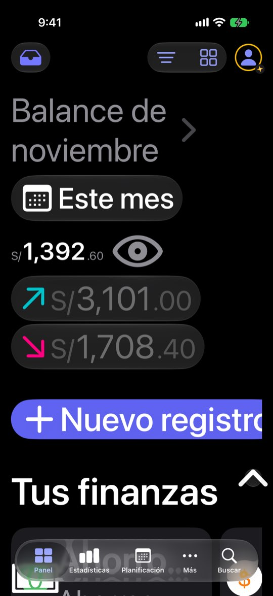
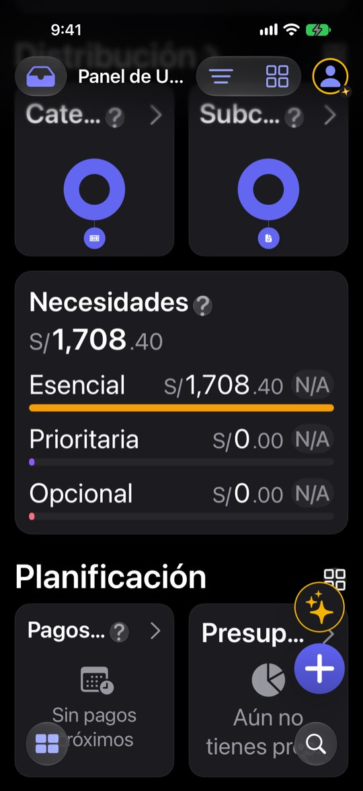
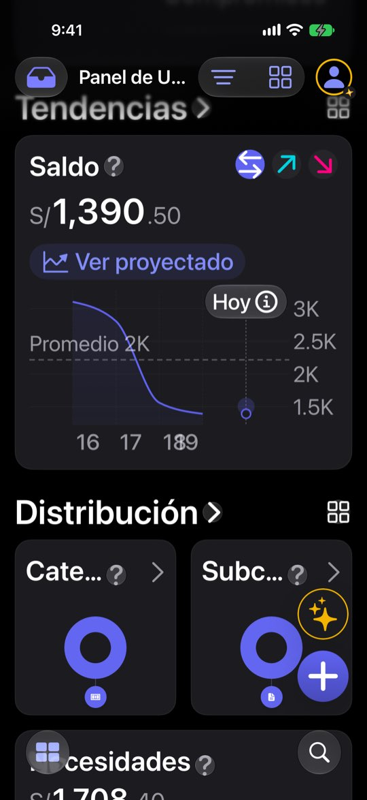

Con texto grande, la cifra principal es lo más pequeño de la pantalla
ficha con el reloj del simulador en el 20 de noviembre de 2026: cuatro cuentas (Ahorros USD $33,615 · Cuenta Principal S/ −53,738.91 · Efectivo S/ 380 · Tarjeta de crédito S/ 1,284.30 por pagar), balance de noviembre S/ 6,882.40 (entró S/ 12,910.40, salió S/ 6,028), saldo total S/ 64,690.04 y una nota de salud de 99. El saldo negativo de la Cuenta Principal sale de cómo la semilla reparte dos años de gastos; aquí sirve para ver qué hace el Panel con una cuenta en rojo. Ninguna cifra es de una persona real.Lo que se ve hoy
- Observado Capturas 30-35 (AX3 y el máximo)
- Observado Código: la cifra usa un tamaño fijo de 36 pt (DesignTokens.swift:752) y se encoge para caber (AmountText.swift:101-102)
- Hipótesis El perfil P7 (texto grande) no encuentra la cifra que más importa



Alternativas
Todas con el mismo caso. Las cifras salen de las capturas salvo donde la maqueta dice «ilustrativo».
La cifra crece con el texto
La cifra principal escala con el texto, con un tope, y las píldoras se apilan.
A favor
- Recupera la jerarquía
- Cambio acotado al hero
En contra
- Con el tope alto, cifras de 9 dígitos necesitan dos líneas o encoger
Disposición de lectura
En tamaños de accesibilidad, «Nuevo registro» ocupa el ancho y las otras tres acciones van debajo; las píldoras pasan a un enlace.
A favor
- Nada se sale de la pantalla
En contra
- Una segunda disposición del hero que hay que probar
Widgets a una columna
Los widgets pequeños pasan a una columna con texto grande y los botones flotantes se esconden al desplazar.
A favor
- Títulos completos
- Nada tapado
En contra
- El Panel se alarga mucho
Lado a lado
| A | B | C | |
|---|---|---|---|
| Cifra legible | Sí | Sí | No |
| Nada cortado arriba | No | Sí | No |
| Widgets legibles | No | No | Sí |
Recomendación
A + B primero (son el hero, lo que se ve al abrir) y C después. El ticket de texto grande de septiembre se cerró con las pantallas principales; el hero del Panel se quedó con su tamaño fijo.
Decide Jürgen
¿La cifra del Panel escala con el texto (A)? ¿Disposición de lectura para el hero (B)? ¿Widgets a una columna (C)?
Revisión por vistas 2.3 · Panel · 7-nov-2026. Capturas del simulador (build Debug de origin/2.3, iPhone 17 Pro e iPad Pro 13, iOS 27.2, modo oscuro, datos ficticios). Los siete perfiles son lentes simuladas, no entrevistas.